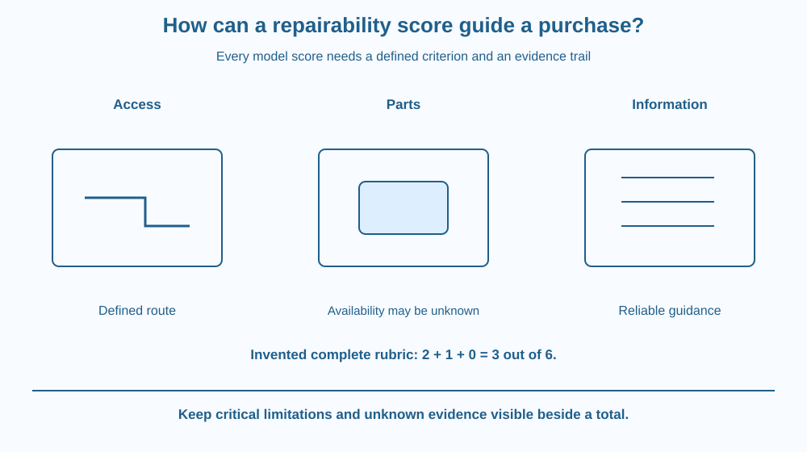

Build a transparent repairability score from defined criteria and evidence. Distinguish access, replaceable parts and available information from a guarantee of easy repair. Use fictional product records and keep unknown evidence separate from an observed failure.
Two products look equally sturdy, but one has an accessible replaceable part while the other seals that part inside a difficult-to-open assembly. If the part fails, their practical repair routes can differ.
A score might help compare them, but only if the criteria and evidence are visible. A large total with hidden weights can conceal a major weakness.
The useful question is not which product receives the most impressive label, but whether a particular likely repair can be performed with appropriate access, parts and reliable information.
Repairability concerns how feasibly a product can be restored to its intended function under relevant conditions. It depends on design, information, parts, tools and skills rather than one material property alone.
Access matters when a failed component must be reached without destroying surrounding parts. Fasteners, joints and the order of disassembly can influence the route. Accessible does not automatically mean safe for an untrained person to open.
Modularity can allow a damaged component to be replaced without discarding a much larger assembly. The benefit depends on whether the replacement part is actually obtainable and compatible, not merely whether a diagram draws a separate block.
Documentation can help identify parts and procedures. Missing or unreliable information can make an apparently simple design harder to repair. Practical availability can also change, so a real assessment needs a date and context.
A scoring rubric defines each criterion, scale and weight. In a fictional classroom model, three criteria might each receive zero, one or two points. A product with scores two, one and zero totals three out of six.
The total is not a physical law. Weighting criteria differently can change rankings, and one critical limitation can matter more than the sum suggests. A score should preserve the individual evidence rather than replacing it with a single unexplained number.
Unknown is different from poor performance. If spare-part availability has not been checked, marking unknown is more honest than inventing a zero or a perfect score. A later check can then resolve the missing evidence.
Repairability also differs from durability and whole-life environmental impact. A repairable product can still fail often, while a durable one might rarely need intervention. A full decision can consider those properties separately rather than allowing one score to stand for all product quality.
Draw a product as connected modules with an access route to one likely failed part. Mark the fastener, replacement route and information source needed to complete the repair.
Then create three evidence cards beside the rubric. Each score must point to a card rather than an opinion about how modern or attractive the product looks.
Remove one card and mark its criterion unknown. This tests whether the report can preserve incomplete knowledge without manufacturing a confident total. A useful rubric supports review and revision, not just a quick winner.
The SVG compares two fictional module layouts and a three-criterion rubric. Access, part replacement and documentation each have separate evidence fields and score positions.
An unknown marker interrupts the total where evidence is missing. A second row shows the invented two-plus-one-plus-zero calculation only after all three model entries are supplied.
The diagram names no actual product or current spare-part supplier. It is an assessment method, not a recommendation to open an electrical appliance or a claim that a high score guarantees every repair will be safe or economical.

Indian consumers and schools may face a choice between replacing a whole product and repairing an appropriate component. Access to parts and skilled service can differ by place and time, so real evidence belongs beside a dated assessment.
A purchase decision can also involve safety, cost, durability and the intended use. A classroom repairability score should not quietly become a complete financial or environmental recommendation.
Students should use fictional diagrams rather than opening devices, batteries, mains equipment or pressurised products. Understanding a repair route does not grant the training or permission needed to perform it.
Use paper and two fictional modular-product drawings.
State that the rubric is a classroom model, not an official rating scheme. Do not infer actual brand performance or attempt disassembly. Ask a partner whether changing one weight would change the conclusion and whether that weight reflects the stated task.
Why might one inaccessible critical component outweigh several easy cosmetic repairs? Relate the scoring system to likely failure and intended function.
Now imagine a part that was available when the product was new but is unavailable later. Which evidence field changes? Repairability includes a support context, not only the geometry visible at manufacture.
What should each repairability score be linked to?
Answer: B — A transparent rubric connects each number with an assessed feature or information source.
Why can a total score be incomplete as a decision?
Answer: C — The component results and task context can matter more than the sum alone.
Fictional complete scores are 2, 1 and 0. What is their total?
Answer: A — Adding the three supplied model entries gives three out of a possible six.
Create a transparent repairability card with criteria, weights, dated evidence, unknowns and a conditional conclusion. Use a fictional product and one specified repair scenario.
Include a warning against letting the total hide a critical limitation. Your card must distinguish assessment from actual repair instructions and must not invent current part availability or savings for a real product.
A good score can become more useful by refusing to score an unknown. Leaving one field unresolved makes the next evidence need clear and prevents a neat total from overstating what the assessor knows. Transparency is part of the tool's value, not an obstacle to finishing the table.
Repairability scores need explicit criteria and evidence for access, parts and information; unknowns and critical limits should remain visible beside any total.